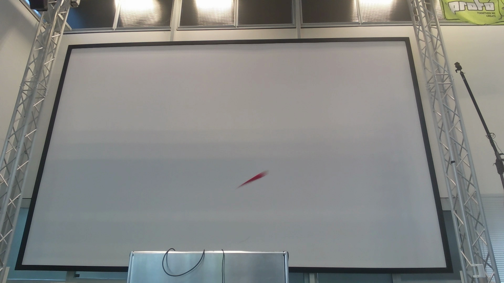

Machines and Users
Date
April-May 2026
Project Type
Academic
Roles
Machine Learning, Hardware Design, Software Engineer
Skills
Python, CNNs, LSTMs, ESP32, Data Collection
In Short
For this university project, I built a machine learning model that could interact with the physical world. I chose to do it with paper planes. Anyone who has thrown one has a rough idea of where it'll go, and then it does something else entirely. If people can't predict how a paper plane flies, I wanted to see whether a machine could.
The plan was to have a small laser follow a paper plane through the air. The first version sort of worked. The laser would find the plane, but it was always a step behind. By the time the camera had seen the plane, the model had processed the frame and the servos had moved, the plane was already somewhere else. Reacting faster wasn't going to fix that, so I changed the question. Instead of asking where the plane is, I asked where it's going to be. The laser stopped chasing the plane and started waiting for it.
In the end, I built a small robot that could recognize which kind of plane had been thrown and follow it in mid-air.
In Detail
Data: My team and I threw 86 paper planes, split evenly between two designs. We folded them from different colored paper so the model would learn shape rather than color, and threw them from different positions and angles. Every video was taken at 60 frames per second, and then the data was enhanced using filters.
Seeing: The webcam feed goes into a convolutional neural network (CNN) that answers whether there is a plane in view and what kind of plane it is.
Predicting: Position comes from YOLOv8, a pre-trained model that finds the plane in each frame. Its coordinates over time form a trajectory, and that trajectory is the input to an LSTM. The LSTM outputs an (x,y) coordinate for where the plane will be 3 frames, or about 50ms, from the present. Because paper planes fly so chaotically and the dataset was small, I measured it with normalized mean absolute error, which is thrown off less by the occasional wild flight than squared error would be.
Moving: The predicted coordinates are sent over serial to an ESP32, which drives two servo motors, one per axis, with the laser mounted on top. The laser was the "proof" that my model could follow the planes in real time.

In Reflection
As someone who thinks a lot about users, my first question with projects is always "who am I designing for?" While this project is not very design heavy, I thought quite seriously about this question. I designed the code, the circuit and the chassis, but I was never its user. Once a plane left my hand, I had no part to play. I couldn't click anything, adjust anything, or even see what the system saw.
The thing that actually used it was the LSTM. It took in the world as a stream of coordinates, made a decision, and acted on it through the servos. Every design choice I made was really in its service: what the camera should show it, how the data should be cleaned for it, how fast the serial connection had to be so it wasn't working with stale information. When the laser lagged behind the plane, the LSTM was experiencing a usability issue.
This project changed how I think about the word "user." In UX, we build on psychology: on how people perceive, pay attention and remember. Those foundations work because they are, to some degree, shared by all of us. AI systems are fundamentally different. They perceive the world through a different distal object (pixels, tokens, coordinates), and when they hallucinate, it's partly because their picture of the world is built from something other than ours.
As AI systems take on more tasks, I think interaction design will have to grow with them. Not only in how AI changes the way people use technology, but in what kind of world we're building for other kinds of intelligence to act in. Designing for an LSTM was a very small version of that question, but it was a real one.
More than anything, this project taught me to ask who and what I'm actually building for, and to be suspicious of my first answer.